Jinhong Deng
Researcher at Meituan LongCat Team
I am currently a Researcher at Meituan LongCat Team (Beidou Program). I received my Ph.D. degree from the School of Computer Science and Engineering, University of Electronic Science and Technology of China (SCSE, UESTC), supervised by Prof. Lixin Duan and Prof. Wen Li. Before that, I obtained the B.Eng degree from the School of Information Science and Technology, Southwest Jiaotong University (SIST, SWJTU) in 2019. During my Ph.D., I was also honored to work with Joey Tianyi Zhou and Yang He as a visiting student at A*STAR Centre for Frontier AI Research (CFAR), Singapore. I sincerely appreciate everyone I have encountered and every moment of joy and challenge along the way.
Email: jhdengvision AT gmail.com, [Google Scholar], [GitHub].
During my Ph.D., my research mainly focused on computer vision and transfer learning, especially visual perception tasks such as object detection and semantic segmentation, aiming to build a robust visual system capable of effectively operating in dynamic, open environments. My works cover cross-domain object detection (UMT, CVPR 2021, 500+ citations; HT, CVPR 2023, 100+ citations), semantic segmentation (BAPA-Net, ICCV 2021 Oral), open-vocabulary detection (ROOT, TIP 2026), and source-free domain adaptation (DMCD, AAAI 2022 Oral; Balanced Teacher, TCSVT 2024). I was also interested in model efficiency and proposed visual token compression for multimodal LLMs (SCOPE, NeurIPS 2025).
Currently, I mainly work on pre-train of multimodal/omnimodal foundation models, specifically focusing on topics such as audio-video captioning, understanding, and interaction, as well as long context and memory. If you are interested in my work, please feel free to contact me. I am also open to hosting interns and can provide rich guidance and ample computing resources.
My long-term goal is to build AGI for the digital world and ultimately extend it to the physical world. I am particularly interested in enabling intelligent agents to perceive, remember, and interact—continually understanding evolving multimodal environments and collaborating naturally with humans over time.
Updates
- 2026.07: We released LongCat-2.0, a large-scale MoE language model with 1.6 trillion total parameters and ~48 billion activated per token, supporting 1M context and pre-trained on over 50K AI ASICs. Welcome to use it!
- 2026.07: Our new work "HoloCount: A Holistic Visual Counting Benchmark for MLLMs" has been released, providing a comprehensive benchmark to evaluate the visual counting ability of multimodal large language models.
- 2026.05: Our new work "Mapping Text to Multiplex Graph: Prompt Compression as Lévy Walk-Guided Graph Pruning" has been released, compressing prompts by pruning a text-to-multiplex-graph structure.
- 2026.02: Our new work "Instance-Free Domain Adaptive Object Detection" has been released, adapting object detectors across domains without requiring instance-level information.
- 2026.01: I joined the Meituan LongCat Team as a Researcher (Beidou Program), focusing on multimodal/omnimodal foundation models.
- 2025.12: I received my Ph.D. degree from UESTC, and my dissertation was awarded the Outstanding Doctoral Dissertation of UESTC.
- 2025.11: I passed my PhD defense!!
- 2025.10: One paper about open-vocabulary object detection (ROOT) has been accepted by TIP 2026.
- 2025.10: I was honored to be named an Outstanding Graduate of Sichuan Province and an Outstanding Graduate of UESTC.
- 2025.09: One paper about Efficient Multimodal LLMs has been accepted by NeurIPS 2025. More details, see SCOPE.
- 2025.03: Our work "ResCLIP: Residual Attention for Training-free Dense Vision-language Inference" has been accepted by CVPR 2025. Congrats to Yuhang.
- 2024.12: Our new work "Segmenting Anything in the Dark via Depth Perception" has been accepted by IEEE Transactions on Multimedia, 2024. Congrats to my bro Dr. Peng Liu.
- 2024.11: Our new work "ResCLIP: Residual Attention for Training-free Dense Vision-language Inference" has been released.
- 2024.09: One paper about unsupervised model selection for domain adaptive object detection has been accepted by NeurIPS, 2024.
- 2024.06: Very glad to attend the Doctoral Consortium at The 2024 IEEE Conference on Artificial Intelligence in Singapore and give a presentation about my research titled "Robust Object Detection in Open Environments."
- 2024.03: One paper has been accepted by TCSVT, 2024.
- 2024.02: One paper has been accepted by IEEE Transactions on Automation Science and Engineering, 2024.
- 2023.11: One paper has been accepted by IEEE Transactions on Multimedia, 2023.
- 2023.03: One paper has been accepted by CVPR 2023.
- 2022.06: One paper has been accepted by ECCV 2022.
- 2022.03: Two papers have been accepted by CVPR 2022.
- 2022.03: Serve as a reviewer for ECCV 2022.
- 2021.12: Our paper on source free domain adaptation has been accepted by AAAI 2022 for oral presentation.
- 2021.11: Serve as a reviewer for CVPR 2022.
- 2021.09: I started my Ph.D. study at SCSE, UESTC.
- 2021.07: Our paper on cross-domain semantic segmentation has been accepted by ICCV 2021 for oral presentation.
- 2021.03: Our paper on cross-domain object detection was accepted by CVPR 2021.
- 2019.09: I started my Master's study at SCSE, UESTC.
Publications
|
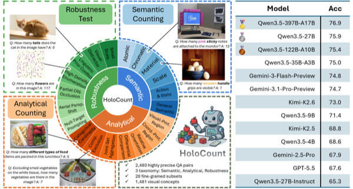 |
HoloCount: A Holistic Visual Counting Benchmark for MLLMs
Jinhong Deng, Limeng Qiao, Guanglu Wan.
arXiv preprint, 2026.
A holistic visual counting benchmark to evaluate the counting ability of multimodal large language models. |
|
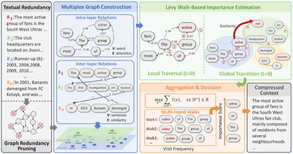 |
Mapping Text to Multiplex Graph: Prompt Compression as Lévy Walk-Guided Graph Pruning
Yaxin Gao, Yao Lu, Jinhong Deng, Jiaqi Nie, Zhe Tang, Jian Zhang, Zhaowei Zhu, Shanqing Yu, Qi Xuan, Joey Tianyi Zhou.
Knowledge-Based Systems, 2026.
Compresses long prompts by modeling text as a multiplex graph and pruning it via Lévy walk-guided graph pruning.
[paper]
|
|
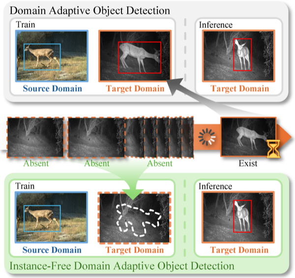 |
Instance-Free Domain Adaptive Object Detection
Hengfu Yu, Jinhong Deng, Lixin Duan, Wen Li.
arXiv preprint, 2026.
Adapts object detectors across domains without requiring any instance-level information.
[paper]
|
|
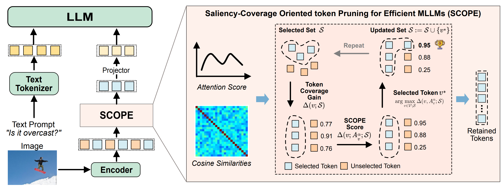 |
SCOPE: Saliency-Coverage Oriented Token Pruning for Efficient Multimodal LLMs
Jinhong Deng, Wen Li, Joey Tianyi Zhou, Yang He
NeurIPS 2025.
Prunes redundant visual tokens in multimodal LLMs with a saliency-coverage oriented strategy for efficient inference. |
|
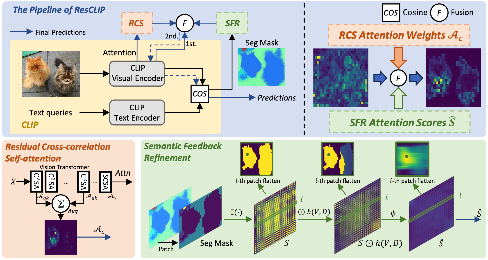 |
ResCLIP: Residual Attention for Training-free Dense Vision-language Inference
Yuhang Yang*, Jinhong Deng*, Wen Li, Lixin Duan. * equal contribution.
CVPR 2025.
A residual attention mechanism for training-free dense vision-language inference. |
|
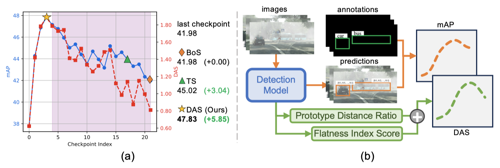 |
Towards Unsupervised Model Selection for Domain Adaptive Object Detection
Hengfu Yu*, Jinhong Deng*, Wen Li, Lixin Duan. * equal contribution.
Neural Information Processing Systems (NeurIPS), 2024.
An unsupervised criterion to select the best-performing model for domain adaptive object detection. |
|
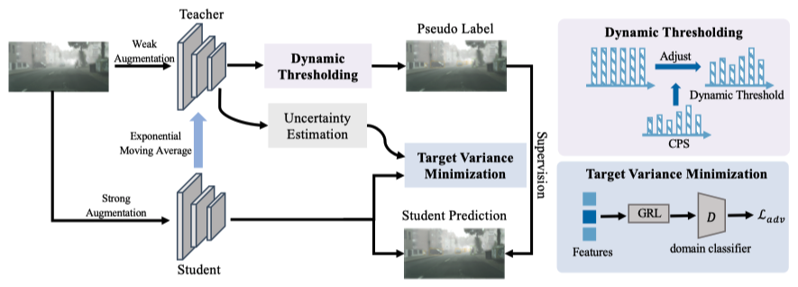 |
Balanced Teacher for Source-free Object Detection
Jinhong Deng, Wen Li, Lixin Duan.
IEEE Transactions on Circuits and Systems for Video Technology, 2024.
A balanced teacher framework for source-free object detection without accessing any source data.
[paper]
|
|
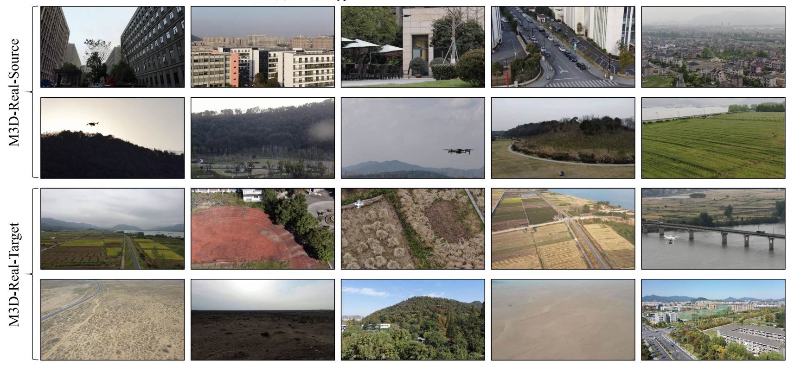 |
Domain Adaptive Detection of MAVs: A Benchmark and Noise Suppression Network
Yin Zhang, Jinhong Deng, Peidong Liu, Wen Li, Shiyu Zhao.
IEEE Transactions on Automation Science and Engineering, 2024.
A new benchmark and a noise suppression network for domain-adaptive micro aerial vehicle detection.
[paper]
|
|
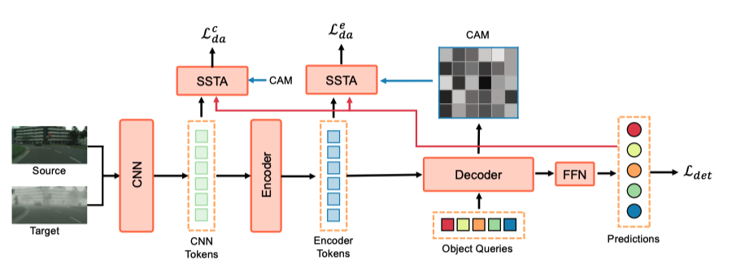 |
Cross-domain Detection Transformer based on Spatial-aware and Semantic-aware Token Alignment
Jinhong Deng, Xiaoyue Zhang, Wen Li, Lixin Duan, Dong Xu.
IEEE Transactions on Multimedia, 2023.
A DETR-based cross-domain detector with spatial-aware and semantic-aware token alignment.
[paper]
|
|
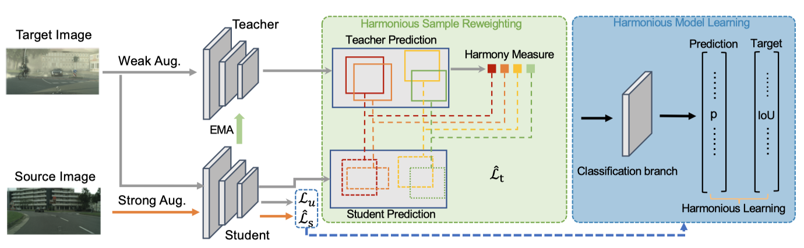 |
|
|
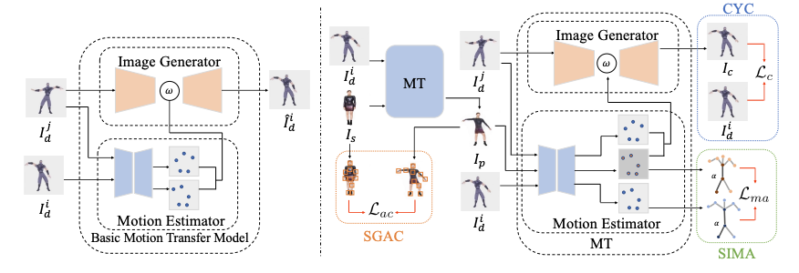 |
|
|
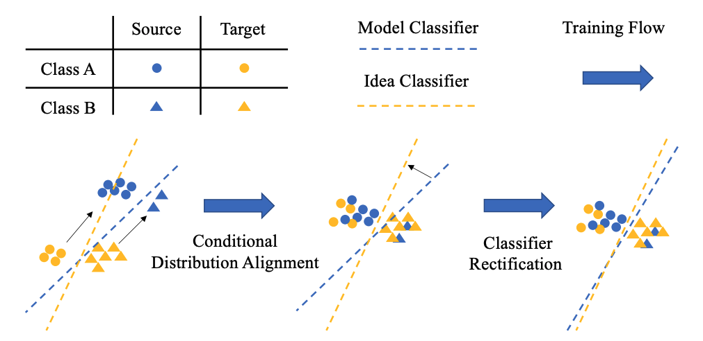 |
|
|
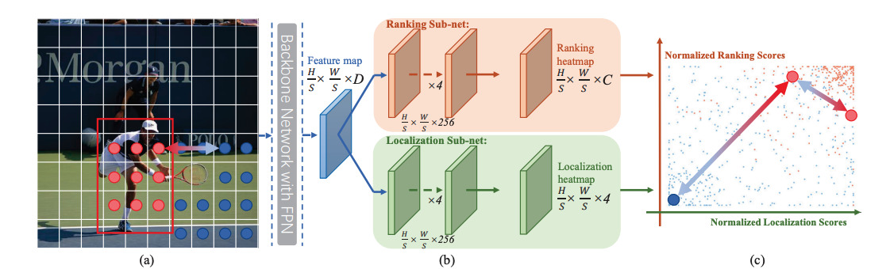 |
|
|
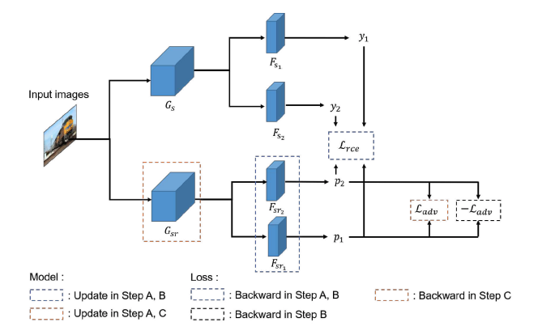 |
Denoised Maximum Classifier Discrepancy for Source-Free Unsupervised Domain Adaptation
AAAI 2022
Tongchu, Yahao Liu, Jinhong Deng, Wen Li, Lixin Duan.
Accepted as oral paper Denoises unreliable target samples to make classifier discrepancy robust for source-free unsupervised domain adaptation.
[paper]
|
|
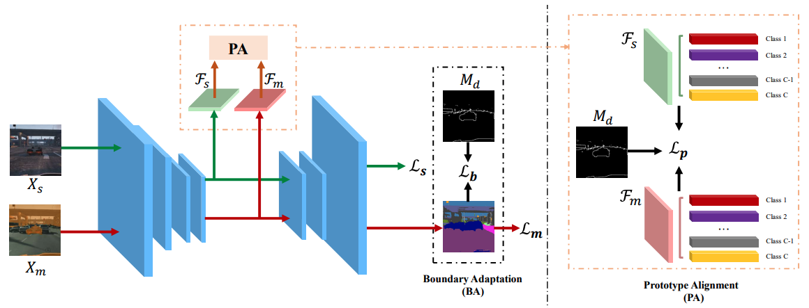 |
BAPA-Net: Boundary Adaptation and Prototype Alignment for Cross-domain Semantic Segmentation
ICCV 2021
Yahao Liu, Jinhong Deng, Xinchen Gao, Wen Li, Lixin Duan.
Accepted as oral paper Aligns source and target class prototypes and adapts the decision boundary to reduce the domain gap in semantic segmentation. |
|
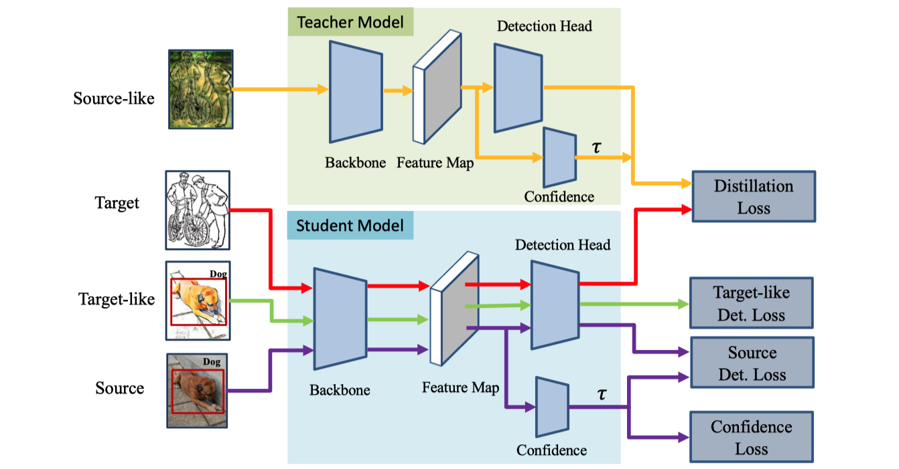 |
Experiences
|
2026.01—Now: Algorithm Researcher at Meituan LongCat Team |
|
|
|
2021.09—2025.12: Ph.D. Student at SCSE, UESTC |
|
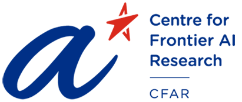 |
2024.09—2025.09: Visiting Ph.D. Student, A*STAR Centre for Frontier AI Research (CFAR) |
|
|
2019.09—2021.05: Master's Student at SCSE, UESTC |
|
2015.09—2019.05: Undergraduate Student at Southwest Jiaotong University |
Honors & Awards
Professional Activities
- Conference Review CVPR 2022, ECCV 2022, CVPR 2023, ICCV 2023, CVPR 2024, WACV 2024, NeurIPS 2024, ICLR 2025.
- Journal Review TPAMI, TIP, TMM, TCSVT, JAIR, Neurocomputing, etc.
Skills
- Programming: Python, LaTex, C/C++, Java
- Framework: Pytorch
- Languages: English(CET-6 565), Chinese(native speaker)
- Hobbies and Interests: Swimming, Badminton, Books
Misc
- Friends: Dongli Xu.
- Update: 2026.08